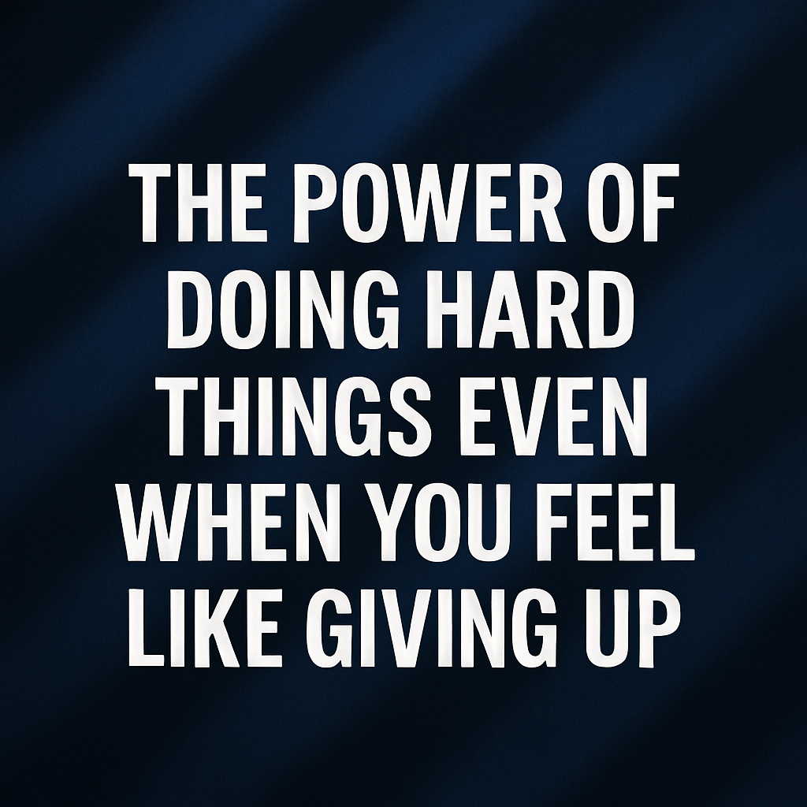

The power of Doing Hard Things Even When You Feel Like Giving Up

"Ease will never make you strong. Resistance will."
There’s something powerful about showing up for yourself, even when every part of you feels like giving up. That’s a lesson life has been teaching me in loud and quiet ways.
Growth doesn’t come wrapped in comfort. In fact, some of the most transformative seasons of your life will feel like a fight. A fight with doubt. A fight with fear. A fight with exhaustion. A fight with yourself.
But doing hard things shapes you in ways ease never can.
When you keep pushing through those moments when quitting feels easier, something inside you stretches. Your discipline grows. Your mindset sharpens. Your confidence deepens, not because everything is working out perfectly, but because you kept moving despite how you felt.
I’ve learned this through my creative journey. Building skills from scratch, learning new things, showing up when no one is clapping yet, it’s hard. But over time, hard becomes your training ground. You realize that every challenge is building you for the next level.
The truth is, you won’t always feel motivated. But you can always choose to stay disciplined. Motivation is temporary. Discipline is a decision. Discipline shows up when feelings walk away.
Hard things teach you patience. They teach you endurance. They teach you to trust small steps. Every day you show up, even tired, frustrated, or uninspired, you’re stacking proof that you’re stronger than your emotions.
You won’t see the full picture now. But one day, you’ll look back and realize those hard seasons didn’t break you, they built you.
The weight that feels heavy now is preparing you to lift more in the future.
So keep writing the code. Keep practicing your craft. Keep studying, showing up, trying, failing, praying, and learning. Keep becoming.
The reward isn’t just in what you achieve. It’s in who you become along the way.
Final Thoughts
Growth demands discomfort. Strength is built in resistance. And your future self will thank you for every hard thing you chose to do when giving up seemed easier.
You are stronger than this season. You are being shaped for something bigger.
Keep going.
If this post encouraged you, share it with someone who might need this reminder today.